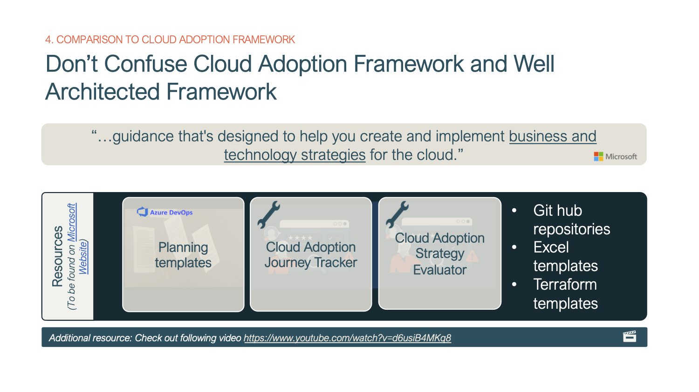

19th of April 2022
1. What is Well Architected Framework (WArF) and how to learn about it?
2. The 5 pillars of the Well Architected Framework
3. Azure Well Architected Review
4. Comparison to Cloud Adoption Framework (CAF)
5. Other Cloud Providers Frameworks
Microsoft introduced the Azure Well Architected Framework in a blog post in July 2020 ( https://azure.microsoft.com/en-us/blog/introducing-the-microsoft-azure-wellarchitected-framework/) to "help you build and deliver great solutions" according to industry best-practices. However, one could also view this as Microsoft's method to harmonize cloud solutions as much as possible or a way to push Azure's native services. Be said, the framework is something not just solution architects developing cloud solutions on Azure should know about, but also data engineers or data scientists may want to take a look at.
Figure 1: Resources. Links:
https://docs.microsoft.com/en-us/azure/architecture/framework/
Besides all the people creating second level content about the Well Architected Framework (WArF),
there are essentially 3 sources of primary information to familiarize with the framework.
The guidelines and best practices are structured in 5 logical units called pillars. At first, the 5 items (Reliability, Cost Optimization, Operational Excellence, Performance efficiency and Security) seemed like buzzwords in a list, but as I became more familiar with them, I started delineating the points more clearly from each other. It helps to build a mnemonic to remember the 5 pillars. When I think of the WArF, I think of robot cops, or R-COPS. After reciting it a few times, you will never forget any of the 5 pillars.
Figure 2: Five Pillars of WArF ... remember R-COPS. Image by The Times.co.uk (
https://www.thetimes.co.uk/article/robocop-car-that-could-catch-crooks-all-by-itself-l95frwb7z
)
The following is a very brief summary of the 5 pillars. If you are looking for detailed information concerning the best practices, the Microsoft website is certainly the better place to go.
It helps to know the pillars by heart, and there is nothing wrong with taking a look at all best practices, although I suspect not every pillar or concept within the WArF is equally important when it comes to data science. Security and cost optimization should be addressed in every cloud architecture, no matter if we are talking about a ML workload or a conventional user app with deterministic functionality. Operational excellence, in professional machine learning solutions, must be considered in the design of such. DevOps is an integral element of your production solution and MLOps an extension of it, addressing changing data and/or performance of a model. As far as reliability and performance efficiency are concerned, requirements regarding these features are to be agreed with the customer (internal or external) and the end users, respectively.
The Well Architected Review (WArR) is a tool to check the proper application of concepts from WArF. Microsoft provides with the WArR a methodology to evaluate a solution architecture or a delivered solution against the 5 pillars of the WArF. I suppose it is advisable to do the first review as soon as the solution is designed according to the customer's requirements but is not yet implemented. This helps possibly introduce adjustments resulting from the evaluation of the WArR.
Figure 2: WArR Context and Usage. Links: docs.microsoft.com
Besides WArR there is another tool called Azure Advisor, which is built in the Azure Platform and gives recommendations after implementation. Recommendations can be aggregated across several subscriptions if you want to use subscriptions to separate development and production environments for example. While the Well Architected Review can be used prior to implementation, Azure Advisor is rather a post-deployment checklist.
Screenshot 1: Screenshot of Azure Advisor in the Azure portal
While the tool may seem self-explanatory at first glance, I want to share some of the lessons I've learned to get the greatest benefit from using it.
Besides the Well Architected Framework, there is yet a second common framework within the Azure universe. One should not confuse the WArF with the Cloud Adoption Framework (CAF). At first glance, there is some overlap. While the CAF addresses the adoption of Azure Cloud for an enterprise as a whole, the WArF is a framework that is relevant for each individual application or solution in the cloud. The CAF is slightly more fundamental, the WArF is used repeatedly in the life cycle of a given application in the Azure cloud. Both frameworks can be used in parallel or consecutively, but they are definitely not mutually exclusive rather they complement each other.

Figure 4: Cloud Adoption Framework (CAF). Links:
https://www.youtube.com/watch?v=d6usiB4MKq8
https://docs.microsoft.com/en-us/azure/cloud-adoption-framework/resources/tools-templates
Besides Microsoft, many other cloud providers have published frameworks that provide best practices for implementing solutions on their cloud technology. Amazon in fact has a document which has the same name (“AWS Well-Architected Framework”) and Google provides the “Google Cloud-Architecture-Framework”. The pillars of these frameworks do not change in the case of AWS and in the case of Google there is one section called "System Design" in addition to the five R-COPS pillars. The principles therefore are unlikely to differ substantially, and as a developer or solution architect you should be familiar with the other frameworks relatively quickly once you have mastered WArF for Azure.
Figure 5: Other Cloud Providers Frameworks. Links:
https://docs.aws.amazon.com/wellarchitected/latest/framework/welcome.html
https://cloud.google.com/architecture/framework